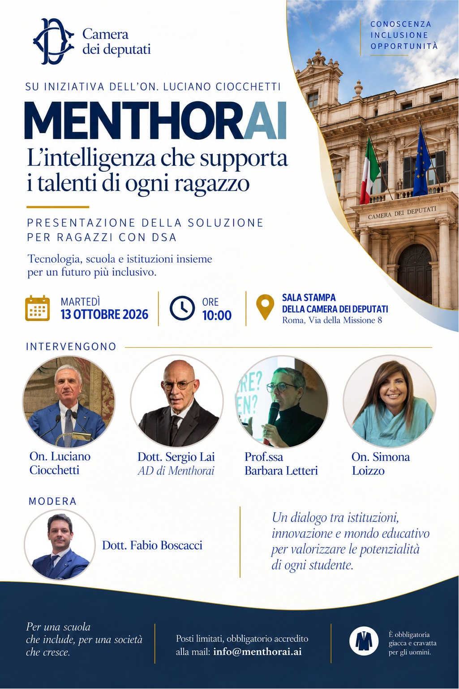

"Momenti di dialogo tra istituzioni, accademia e società civile."
Sala Spinelli ASP 1H1, Parlamento Europeo, Bruxelles
Accesso dalle 16:30 · Lavori 17:00–19:00
Brussels Dialogues porta in una prospettiva europea il percorso “Cultura della Difesa e Sicurezza”, mettendo in relazione capacità industriale, capitale umano, fiducia pubblica e resilienza europea.
Una Strategic Roundtable a partecipazione ristretta, con rappresentanti di istituzioni UE e NATO, Difesa, industria, accademia e think tank, media e comunicazione, corpi intermedi e nuove generazioni. Il confronto sarà moderato secondo la Chatham House Rule.
Sala Stampa della Camera dei Deputati, Roma · Ore 10:00
Su iniziativa dell’On. Luciano Ciocchetti, presentazione di MENTHORAI, piattaforma basata sull’intelligenza artificiale sviluppata per supportare gli studenti con Disturbi Specifici dell’Apprendimento nella comprensione e rielaborazione dei contenuti di studio.
Un confronto tra istituzioni, innovazione e mondo educativo con Luciano Ciocchetti, Simona Loizzo e Barbara Letteri, moderato da Fabio Boscacci.

Evento di confronto sulle politiche di prevenzione e riduzione del rischio cardiovascolare.
Sala Spaack 1C47 - Parlamento Europeo
Bruxelles

Seconda edizione del tavolo di confronto istituzionale.
Sala della Lupa - Palazzo Montecitorio

Evento per la riduzione del rischio orientato ai decisori locali (Sensibilizzazione Sanitaria).
Sala Stucchi - Regione Friuli Venezia Giulia

Sensibilizzazione sui temi strategici, di sicurezza e di difesa nazionale.
Sala delle Colonne • Università LUISS

Formazione e sensibilizzazione all'interno delle strutture scolastiche comunali.
Sala Ghilardotti - regione Lombardia

Analisi e dibattito sul peso economico e sociale della sanità pubblica.
Sala Matteotti - Palazzo Montecitorio

con On. Ciancitto, On. Rosso, On. Loizzo, Dr. Costa, Dr. Assogna
Sala stampa Camera dei Deputati (22 Gennaio 2025).